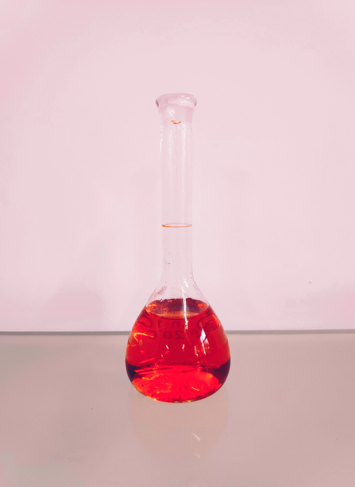

화학반응 은 화학결합의 파괴와 생성을 통해 반응 전 물질과는 화학적 성질이
다른 물질이 만들어지는 과정을 일컫는다. 이때, 화학반응 전 물질을 반응물,
반응 후 물질을 생성물이라고 한다. 인류는 오래 전부터 화학반응을 이용하여 유용한
물질을 만들고자 노력해왔다. 고대의 제련, 주조 기술에서부터 값싼 금속에서 금을
만들고자 했던 중세의 연금술에 이르기까지 축적된 화학 지식을 바탕으로 현대의
화학이 발전했다. 인공적인 화학반응으로 원하는 물질을 만드는 화학 합성을 통해
의약품, 플라스틱과 같은 물질을 만들어내거나, 연소를 이용하여 에너지를 얻는다.
또한 생체 내에서 일어나는 소화과정, 단백질 합성도 화학반응의 일종이다.

referenced site:
naver 지식백과 + my blog:https://blog.naver.com/jaeyongg06